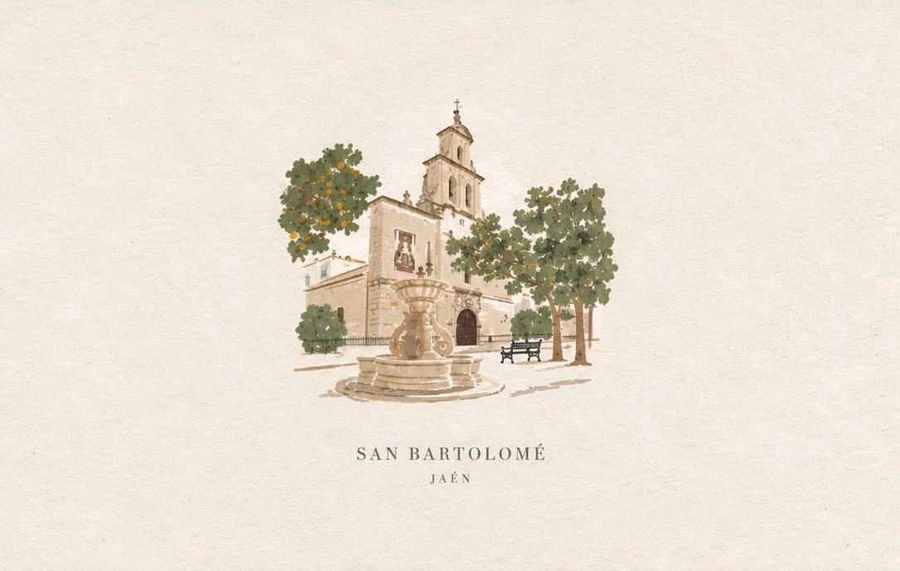
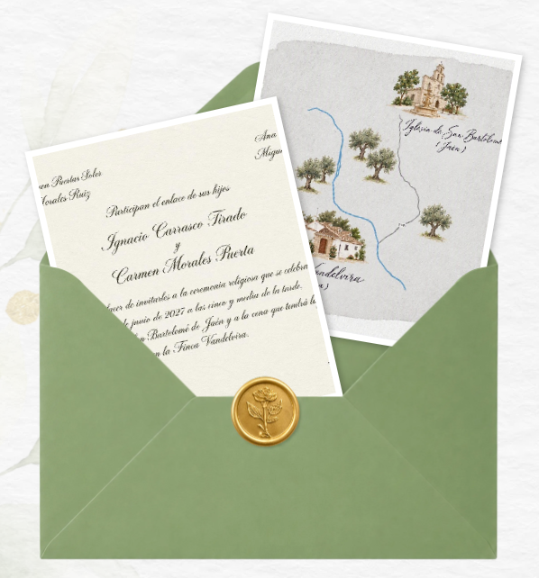
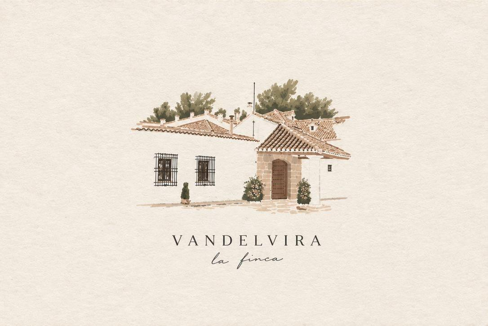
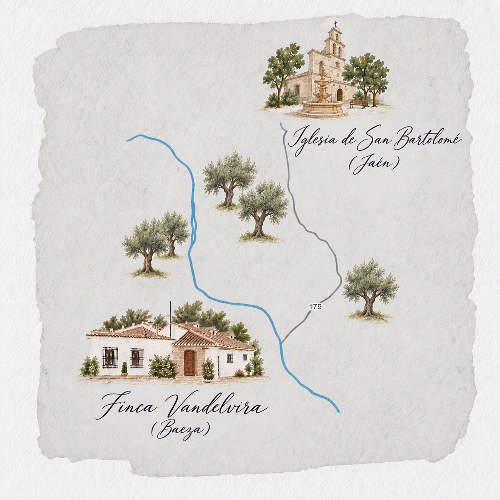

Con mucha ilusión, os invitamos a nuestra boda
Carmen y Nacho
19 de junio de 2027
A LAS 17:30 H
✳
Iglesia de San Bartolomé · Jaén
Nos encantaría compartir contigo un día lleno de cariño, alegría y nuevos recuerdos.

Cada vez queda menos
La cuenta atrás
Ya estamos contando los días para celebrar juntos.
—Días
—Horas
—Minutos
—Segundos
19 de junio de 2027 · 17:30 h
La boda
Nos damos el sí
Un día, dos lugares y muchas ganas de celebrarlo contigo.

La celebración
Finca Vandelvira
Baeza, Jaén
Tras la ceremonia,
lo celebraremos juntos con una cena,
música y mucho más.
El gran día
Cronograma
Una guía orientativa para disfrutar de cada momento.
La ceremonia
Iglesia de San Bartolomé, Jaén.
Partida
Autobuses de ida.
Cóctel de bienvenida
Finca Vandelvira, Baeza.
Cena
Una mesa compartida y una noche especial.
¡A bailar!
Música y fiesta para terminar el día como se merece.
Regreso
Servicio de autobús desde Finca Vandelvira a Jaén, horario pendiente de confirmar.
Los horarios posteriores a la ceremonia son orientativos y podrán actualizarse.
El camino también forma parte del viaje
Cómo llegar
La ceremonia será en Jaén y después nos trasladaremos a Finca Vandelvira, en Baeza.
De Jaén a Baeza
Desde la Iglesia de San Bartolomé hasta Finca Vandelvira.
↗ Aproximadamente 49 km · ◷ Unos 50 min en coche

Para disfrutar sin prisas
Alojamiento
Si vienes de fuera, te recomendamos consultar alojamientos en Jaén o Baeza con antelación. Añadiremos sugerencias concretas cuando estén confirmadas.
Vuestro cariño es el mejor regalo
Lista de bodas
Para quienes nos habéis preguntado, dejamos aquí los datos de nuestra cuenta. Gracias por ayudarnos a empezar esta nueva etapa.
ES 17 0049 0265 4027 1059 7773
Nos encantará contar contigo
¿Nos acompañas?
Confírmanos si podrás venir e indícanos el número de acompañantes y cualquier alergia alimentaria.
Debido al horario de la celebración, será una boda sin niños.
Completa el formulario para ayudarnos a preparar cada detalle.